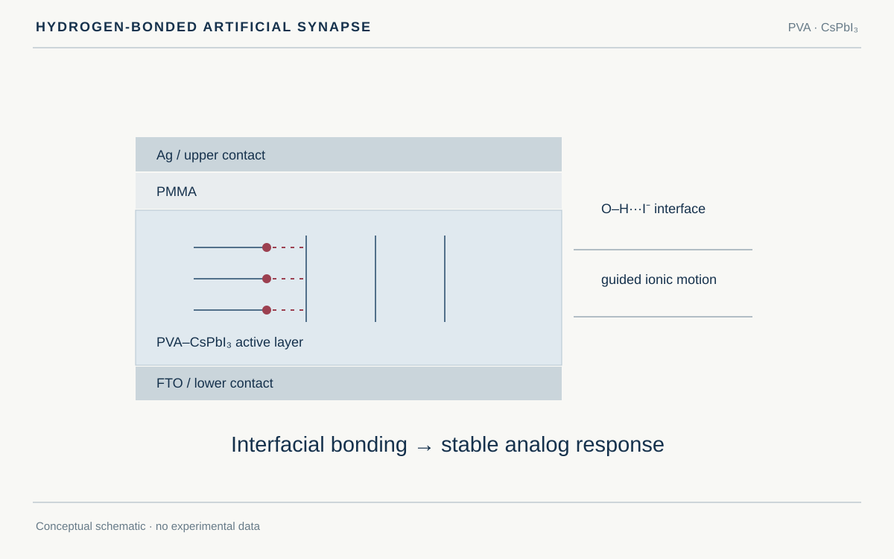
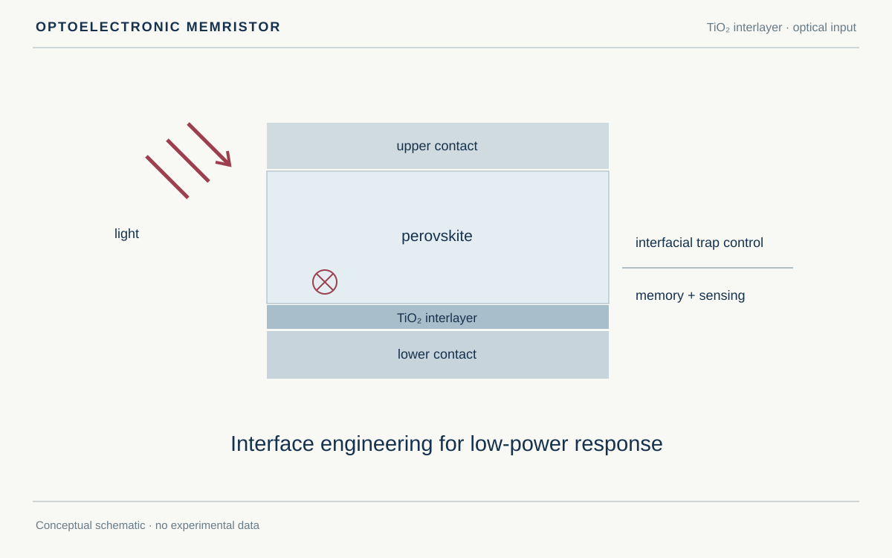

Activities
Activities
A chronological archive of awards, research highlights, and media coverage.
Activity archive
Awards, research milestones, and coverage of published work.
BK21 Recognition for Publication in an Outstanding Journal
KU Hope Scholarship
Samsung Electronics Industry–Academia Cooperation Outstanding Paper Award
Recognized for an outstanding paper in the Samsung Electronics industry–academia cooperation program.
View details
Samsung Electronics Industry–Academia Cooperation Outstanding Paper Award
Recognized for an outstanding paper in the Samsung Electronics industry–academia cooperation program.
View detailsThe laboratory announced Min Jong Lee's award on November 19, 2025.

Media coverage of hydrogen-bond-engineered artificial synapses
Coverage of a first-author study linking hydrogen-bond interface engineering with linear and symmetric artificial synaptic response.
13 coverage links
View details
Media coverage of hydrogen-bond-engineered artificial synapses
Coverage of a first-author study linking hydrogen-bond interface engineering with linear and symmetric artificial synaptic response.
13 coverage links
View detailsThe related research was published in Advanced Materials. Open the individual reports below to read the coverage compiled by the laboratory.
Next-Generation Engineering Researcher Award
Recognized with the Next-Generation Engineering Researcher Award.
View details
Next-Generation Engineering Researcher Award
Recognized with the Next-Generation Engineering Researcher Award.
View detailsThe laboratory announced Min Jong Lee's award on August 29, 2025.

Media coverage of low-power optoelectronic memristors
Coverage of a first-author study using an intermediate layer to reduce traps in low-power optoelectronic memristors.
12 coverage links
View details
Media coverage of low-power optoelectronic memristors
Coverage of a first-author study using an intermediate layer to reduce traps in low-power optoelectronic memristors.
12 coverage links
View detailsThe related research was published in Advanced Functional Materials. The laboratory compiled the reports and video listed below.
Selected for the 2nd IPESK Next-Generation Engineering Researchers Program
No activities match this filter.